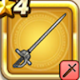

ぎんのレイピア
攻略班 5.0点 / かえん斬りぶんまわしさみだれ斬り
くわしい特徴
【レベル別習得スキル】 Lv1かえん斬り（消費MP：3）敵1体に威力130%のメラ属性斬撃ダメージを与える Lv8ぶんまわし（消費MP：9）振りまわした剣で、敵全体に威力120%の斬撃ダメージを与える Lv20さみだれ斬り（消費MP：13）さみだれに剣を振りランダムな敵に威力70%の斬撃攻撃を4回する Lv28スライム系へのダメージ+10% Lv36攻撃時+2%の確率で毒を与える Lv40攻撃力+5 【限界突破スキル】 1凸スキルの斬撃・体技ダメージ+3% 2凸スキルの斬撃・体技ダメージ+3% 3凸スキルの斬撃・体技ダメージ+3% 4凸スキルの斬撃・体技ダメージ+3%